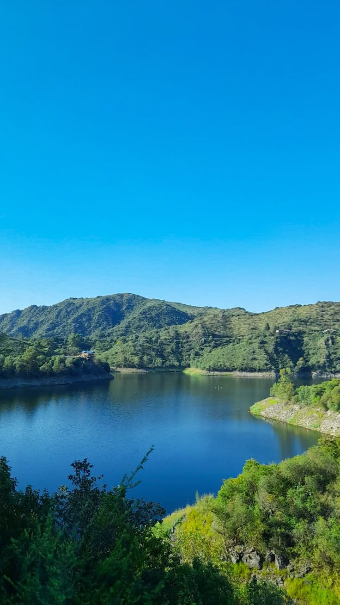

| Destinos económicos en Argentina 🇦🇷 | ||
|---|---|---|
| Destino | Itinerario recomendado | Imagen |
| Iguazú | 3 a 4 días - Visitar las Cataratas, recorrer senderos y hacer paseo en lancha. |

|
| Mendoza | 4 a 5 días - Recorrer bodegas, visitar la montaña y hacer excursiones. |

|
| Costa Atlántica | 3 a 5 días - Disfrutar la playa, caminar por la costa y salir de noche. |

|
| Córdoba | 3 a 5 días - Recorrer sierras, ríos y hacer actividades al aire libre. |
 |
| Merlo | 2 a 4 días - Descansar, recorrer paisajes naturales y hacer caminatas. |

|
| San Rafael | 3 a 5 días - Hacer rafting, visitar cañones y recorrer viñedos. |

|